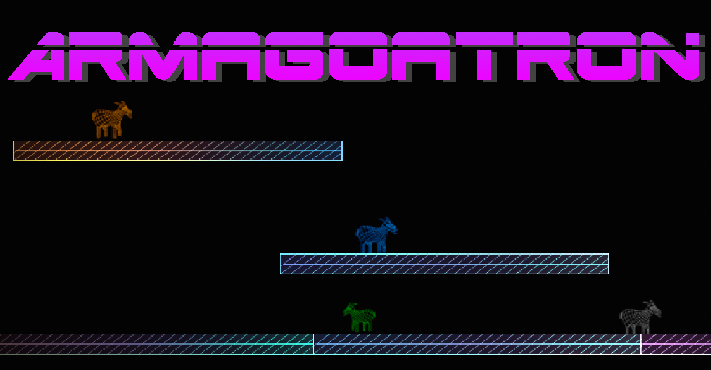
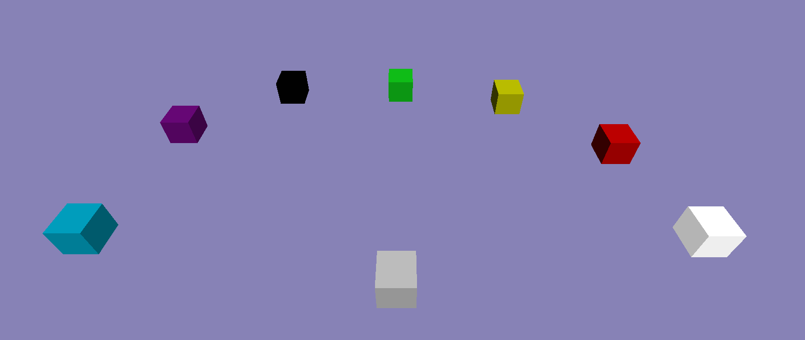
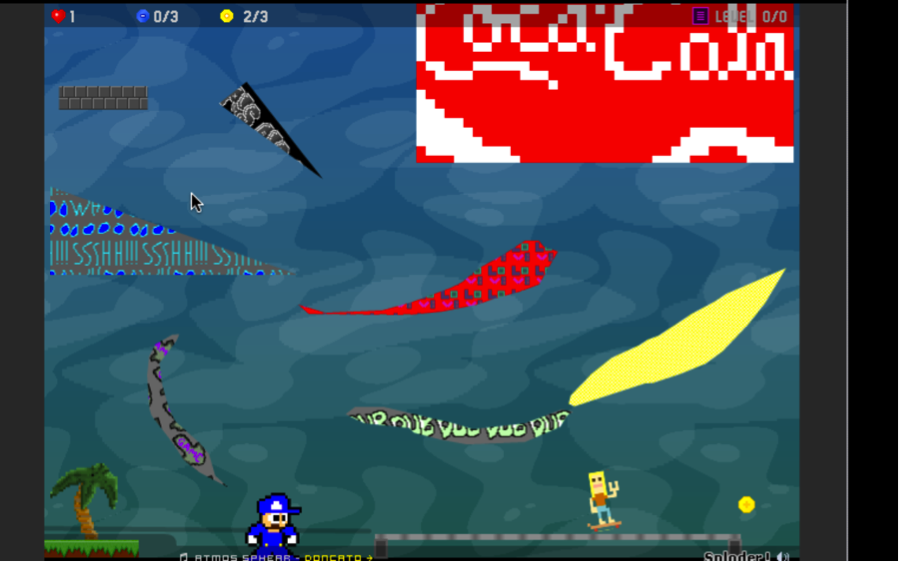
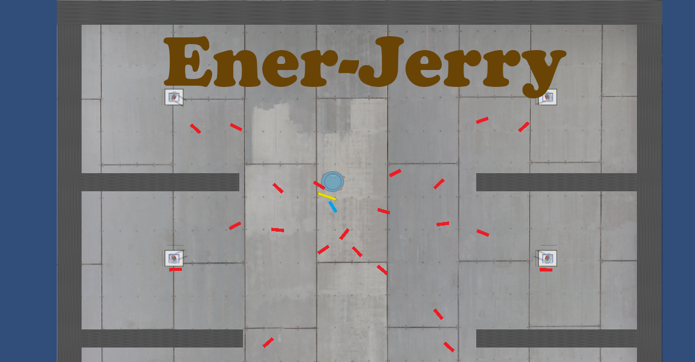
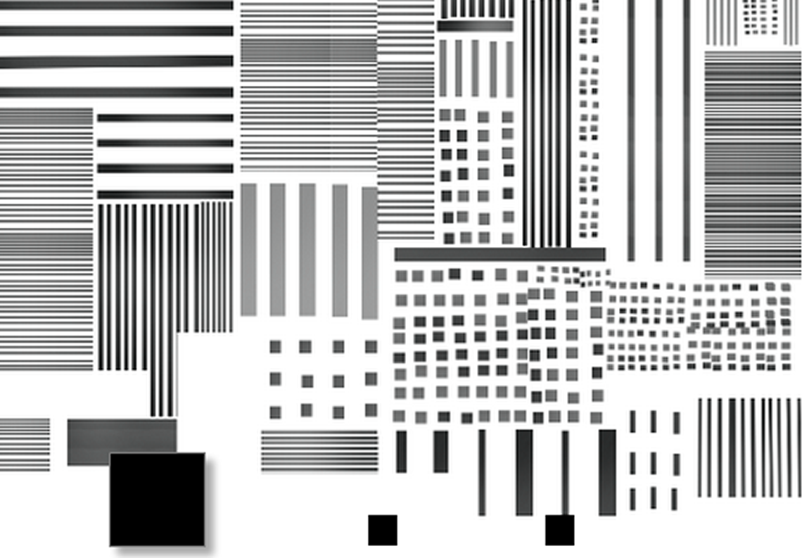
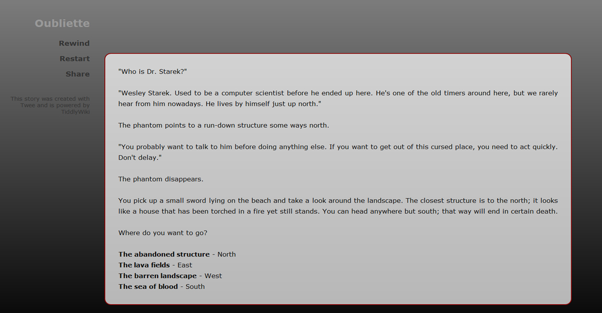
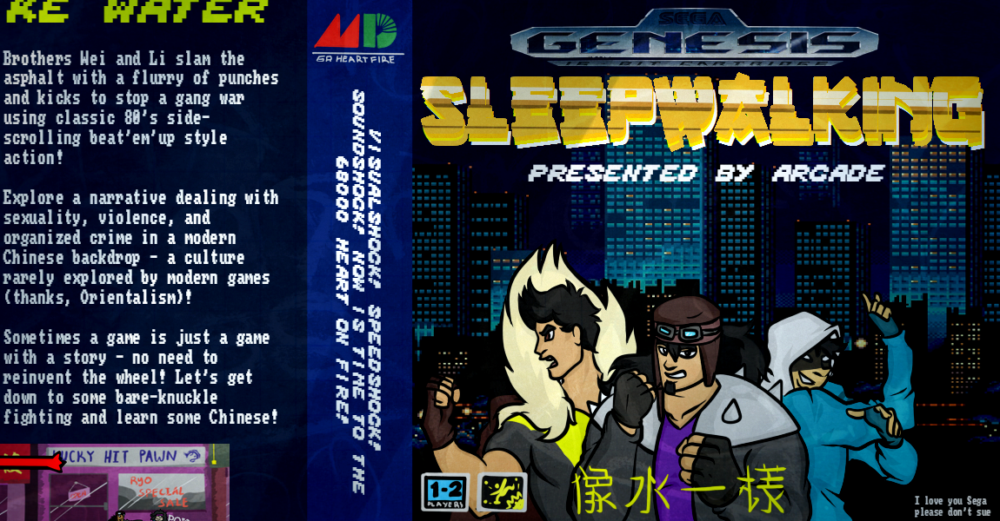
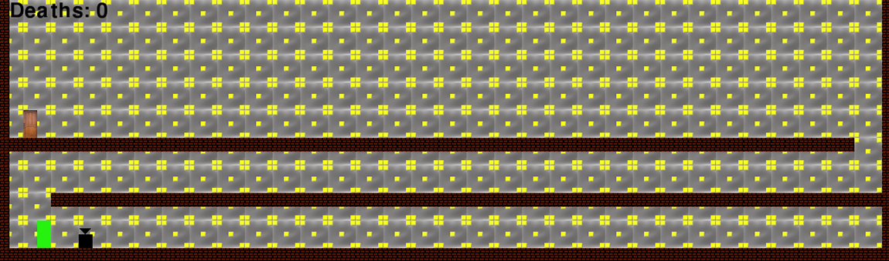
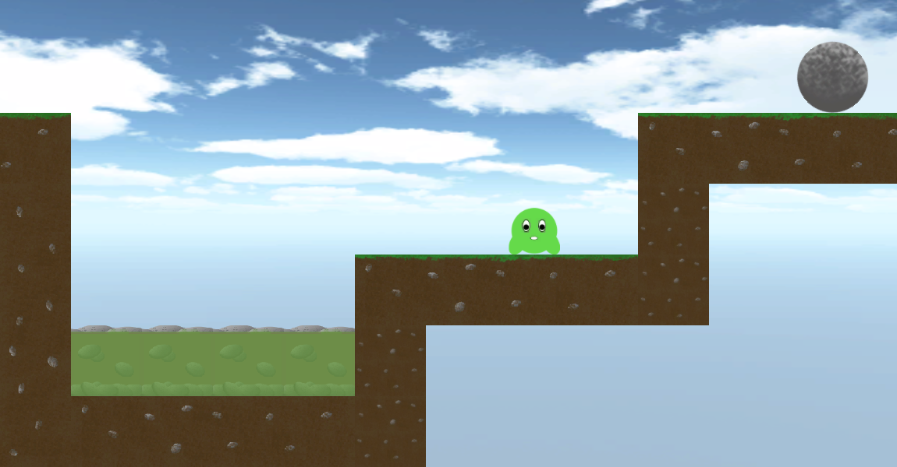
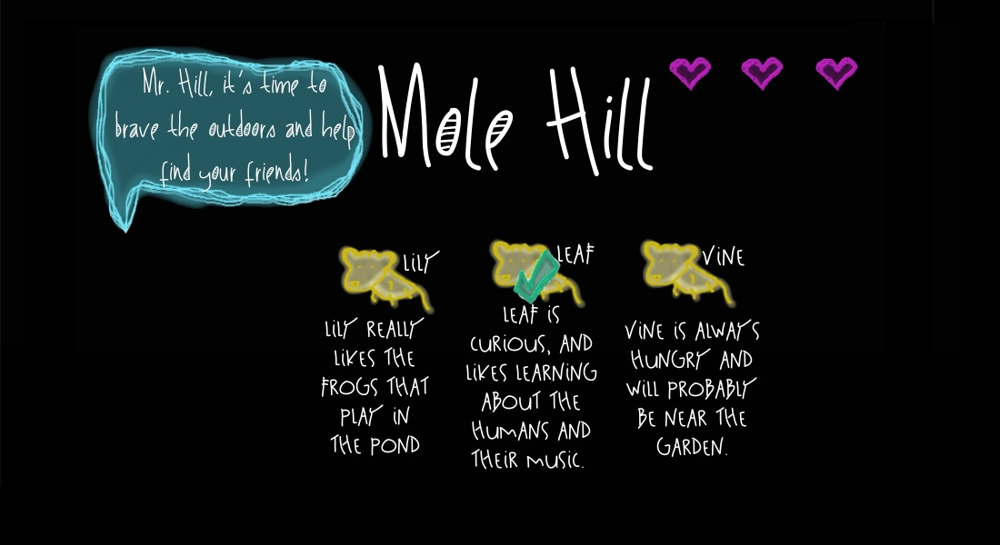

Tuesday, March 31st
Armagoatron
Speaker and Developer: Nathan Hessman
Presentation + Demo Time: 9:30am (CLE A302)
Armagoatron is a 2D multi-player racing game where you race goats to the top. It combines elements of a platformer and a racing game. Couch multiplayer experiences on consoles are having a resurgence.
TowerBattle
Speaker and Developer: Dylan Gedig
Presentation + Demo Time: 9:38am (CLE A302)
TowerBattle is a digital board game about building towers to strategically destroy your friends. It operates as a blend between Monopoly and Tower Defense games, a combo which has never been explored. This game is relevant due to the social constructs in which local multiplayer games operate. These games are shared among groups of friends who each get together, bringing their favourite games and new games they'd like to try. There is an intense novelty in being the person that discovers that cool new game.
Peralta’s Skate Challenge
Speaker and Developer: Jordan Wiseman
Presentation + Demo Time: 9:46am (CLE A302)
Peralta's Skate Challenge is a closed-field, single-player, 8-bit skateboarding game involving a subtle puzzle element. Unlike modern skate games, it focuses on the early history of skateboarding using simple controls, 70s aesthetics, and people who pioneered the sport. It is relatable to a wide audience of both young and old skateboard enthusiasts, as the aesthetic takes players back in time.
Ener-Jerry
Speaker and Developer: Mike Poirier
Presentation + Demo Time: 9:54am (CLE A302)
Ener-Jerry is a top down game where a robot named Jerry defends itself from an enemy onslaught using only his energy shield. It is a unique game where your only offense is defense! It is also a rare experience where you must quickly adapt, strategize, and use your enemies' strengths against them.
Wednesday, April 1st
Right
Speaker and Developer: Danielle Morgan
Presentation + Demo Time: 9:30am (CLE A302)
In this 2D world composed of right angles, you navigate a square on a quest to find an acute angle. You accumulate smaller squares for a chance to enter the room of acuteness. This abstract, seemingly cynical game nudges the player to question their own inclination for the right.
Oubliette
Speaker and Developer: Tim Sobie
Presentation + Demo Time: 9:38am (CLE A302)
Oubliette is a single-player, text-based, open-world game where the player is trapped in a hostile, alternate dimension and must escape by exploring the world and fighting a number of powerful enemies. The game emphasizes exploration of the world rather than rushing to a stronghold containing the final boss. Exploration and combat choices must be made carefully as many choices will result in instant death, thus adding a stress factor to the narrative.
Sleepwalking
Speaker and Developer: Arcade
Presentation + Demo Time: 9:46am (CLE A302)
Brothers Wei and Li slam the asphalt with a flurry of punches and kicks to stop a gang war using classic '80s side-scrolling, beat'em'up style action. Explore a narrative dealing with sexuality, violence, and organized crime in a modern Chinese backdrop—a culture rarely explored by modern games (thanks, Orientalism!). Sometimes a game is just a game with a story—no need to reinvent the wheel! Let's get down to some bare-knuckle fighting and learn some Chinese!
Daniel's Puzzle Game
Speaker and Developer: Daniel Bolink
Presentation + Demo Time: 9:54am (CLE A302)
Daniel's Puzzle Game is a game where you have to get all shapes to a door. The game is unique because you can swap between shapes and, while swapped, the shapes can still move.
Jelly Jump
Speaker and Developer: Robert Martin
Presentation + Demo Time: 10:02am (CLE A302)
Jelly Jump is a classic sidescroller where you play as a blob of jelly, slowly deteriorating as you attempt to reach your objective. Aside from needing to solve the puzzles of each level, a player must balance their shrinking mass with the benefits of being more nimble. Jelly Jump combines old game elements with the inability to retain solid form to bring new meaning to fluid platforming.
Mole Hill
Speaker and Developer: krista coté
Presentation + Demo Time: 10:10am (CLE A302)
I am creating an exploration game where Mr.Hill—the blind, shut-in mole—must search for his friends who have ventured into the human's yard one night. Currently, very few sound-based games exist, and those that do focus on a fear of not seeing rather than on the benefits of listening. I made this game for a relative who is visually-impaired, as a way to give them a game that capitalizes on their strengths of hearing.